Ask, and get real work back
It does the sum with a calculator, lays out the plan, draws the chart, and shows every step it took, so you are never taking its word for it.
Open source · Free to start · Early and improving every week
OpenLobs is an AI assistant for real work. It chats, uses your apps, runs tasks and checks its own result, and can work on your own computer, but only when you allow it.
Filmed on the real app, running on sample content (a sample account and scripted model replies, so every take is the same).
It does the sum with a calculator, lays out the plan, draws the chart, and shows every step it took, so you are never taking its word for it.
Give a task a goal and how you will know it worked. OpenLobs checks the result, tells you what passed and what did not, and never claims more than it did.
Anything that changes things waits for your OK. Your computer is touched only for a short, fixed list of jobs, and you can stop it in one click.
What is in the app
Each part below is a page in the app. The pictures are real screens, not mock-ups.
Chat
Ask in plain words. OpenLobs picks the tools, runs them, and lays every step out under the answer.
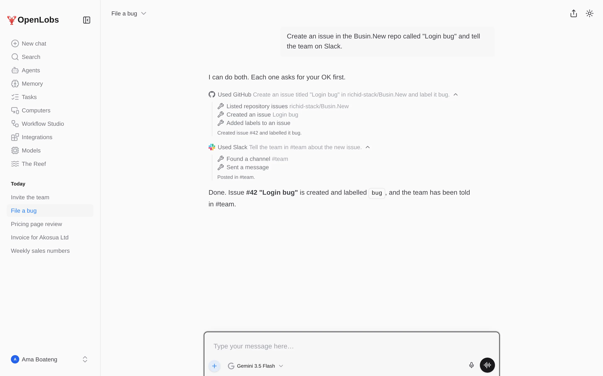
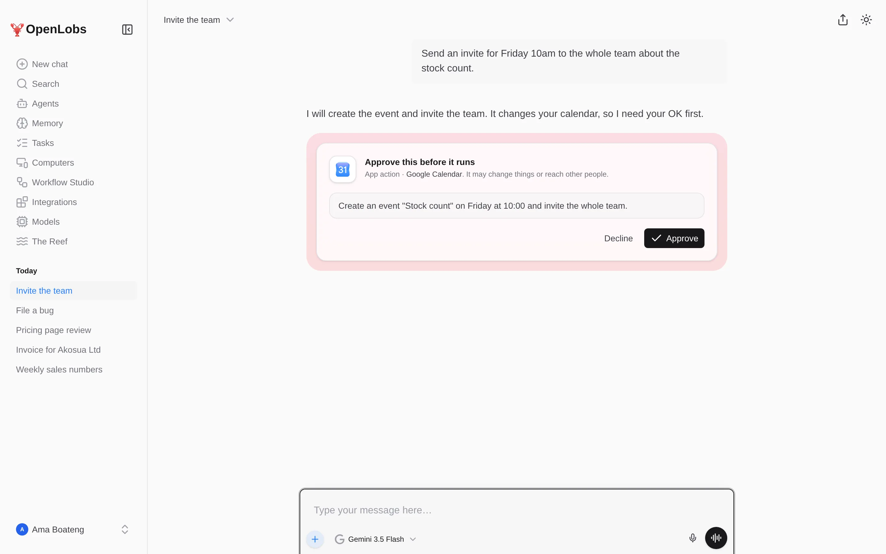
Tasks Working
Give it a goal, and if you like, how you will know it worked. It does the work on its own, checks the result, and tells you honestly how it went.
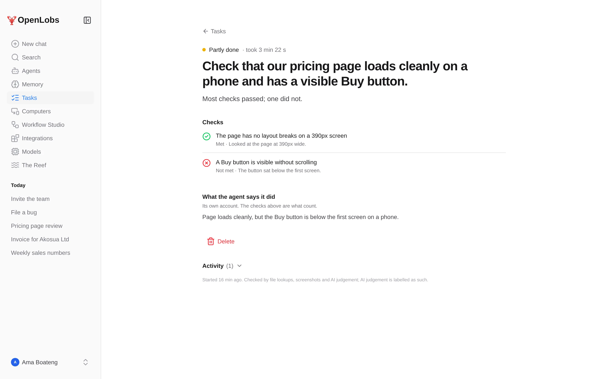
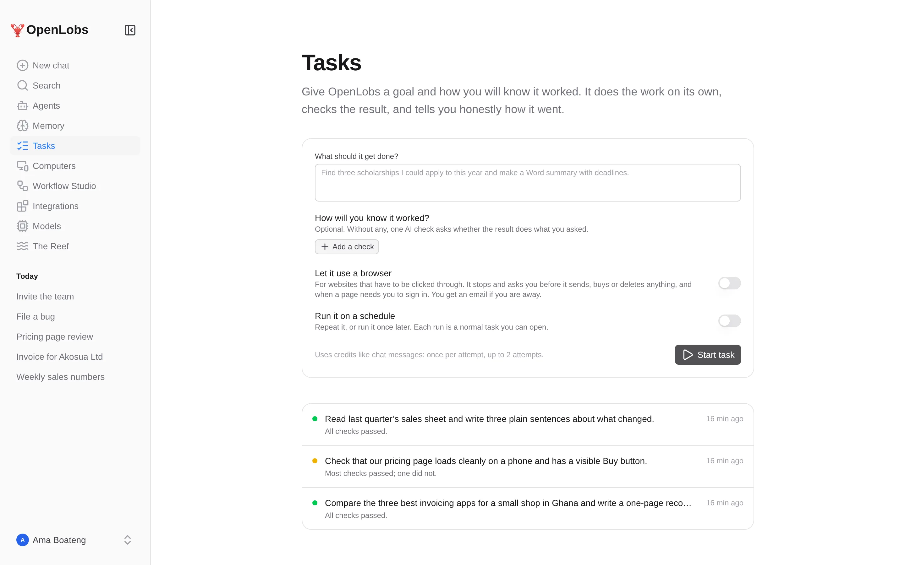
Workflow Studio Working
Chain triggers, actions and AI steps into something that runs on its own, with you in the loop where it matters.
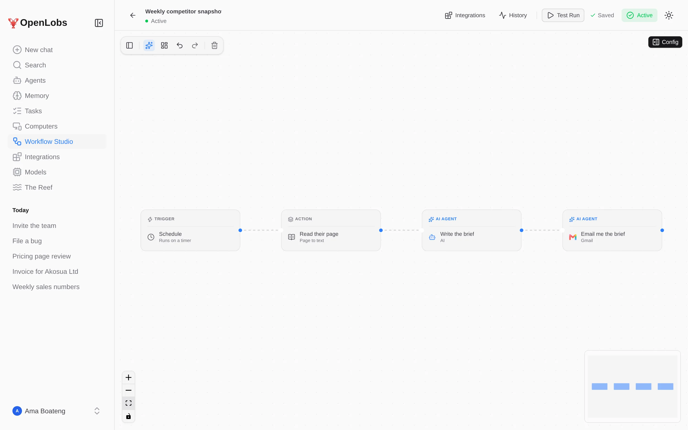
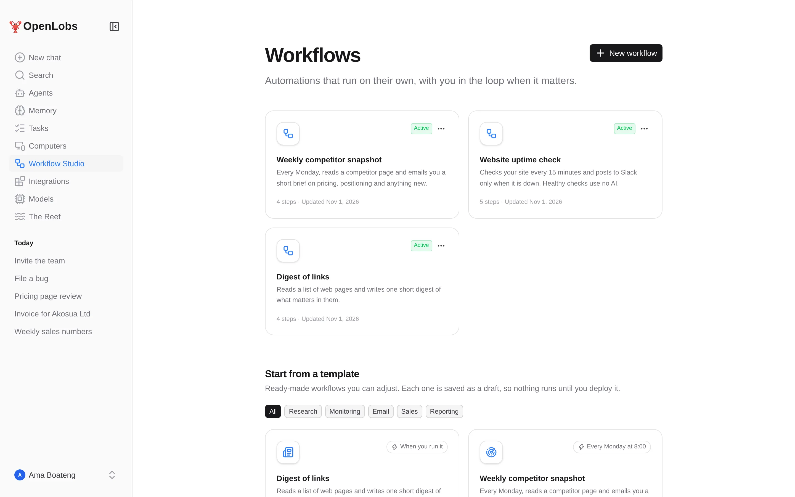
Agents, skills and memory
Save an assistant with its own instructions, tools and skills. Tell it once what it should remember, and it does not ask again.
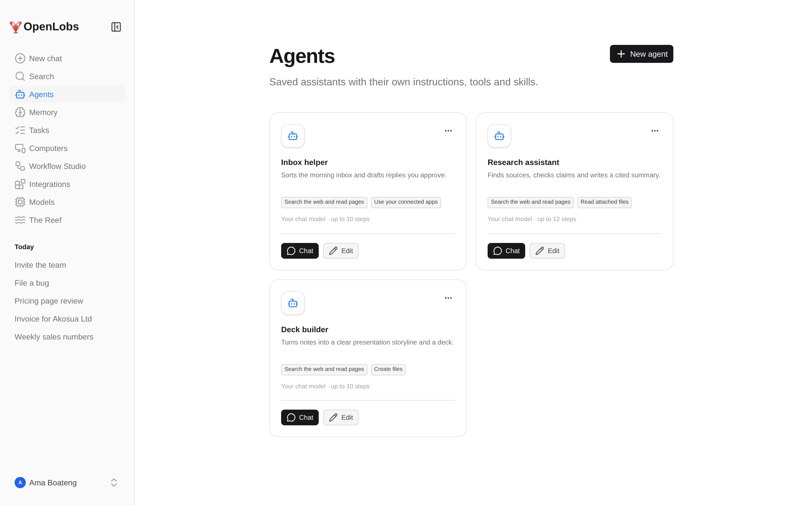
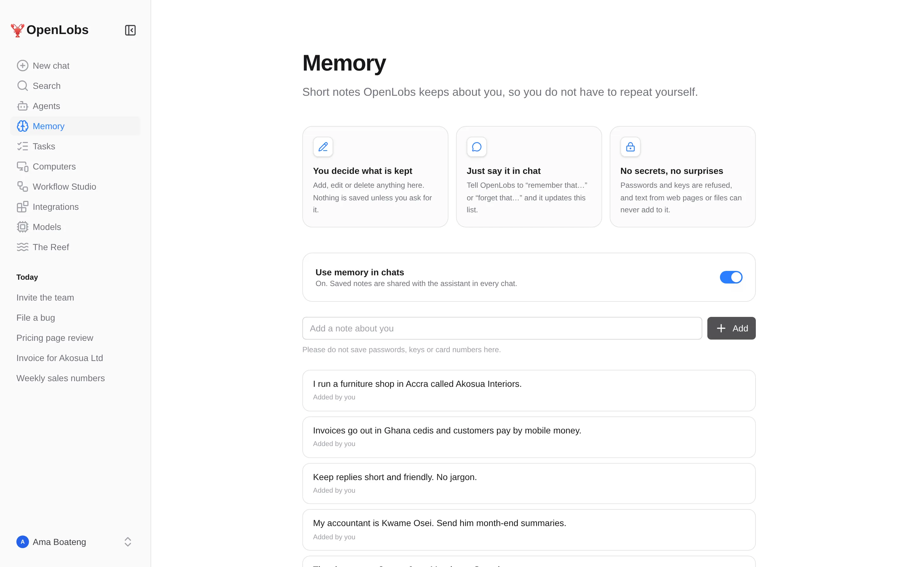
The Reef Early
A community for sharing agents: profiles, stars, forks, and questions with answers. Anything shared goes through a safety scan, and a review queue catches what the scan cannot.
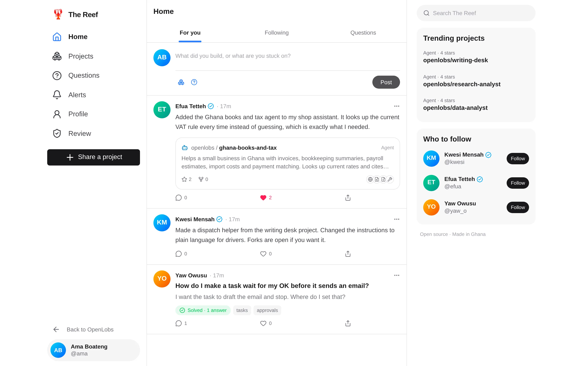
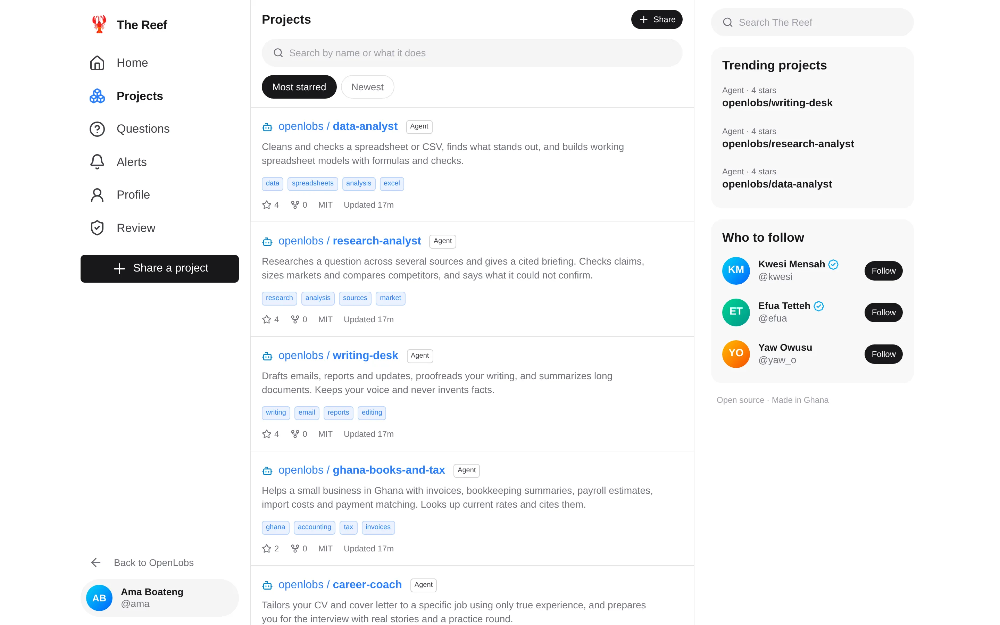
Computers and the Bridge Early · Windows first
The Bridge is a small program that lets OpenLobs do a short, fixed list of approved things on your computer. It only calls out. It opens no port and runs no commands.
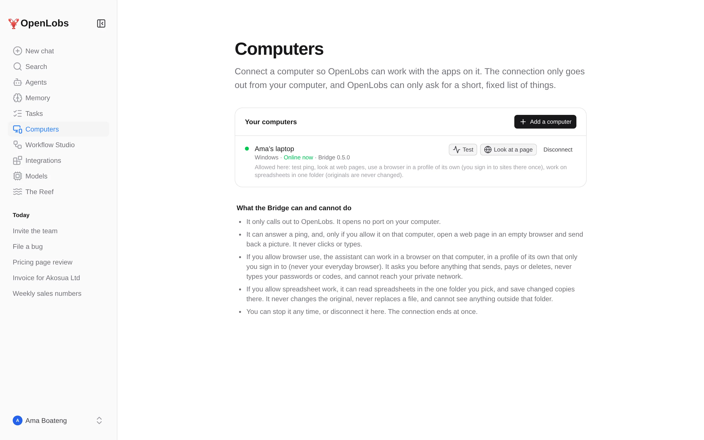
Integrations and MCP servers Working
Connect an app once and every chat, agent and workflow can use it. Bring your own MCP servers too; you approve each tool before it can be used.
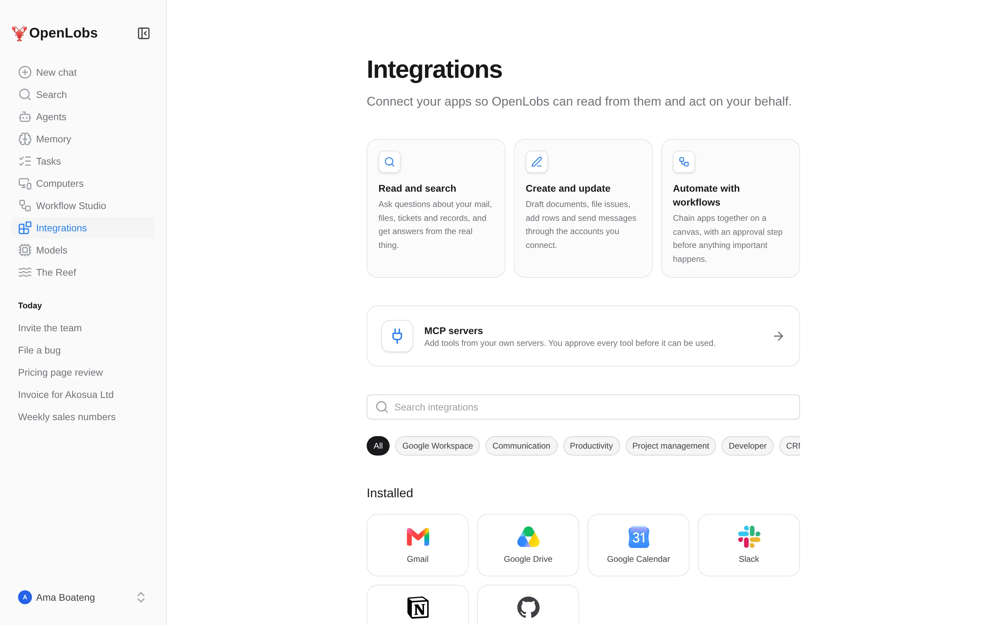
Models New
Use the models you already pay for. Messages sent to your own models use your account with that provider, so they cost no OpenLobs credits.
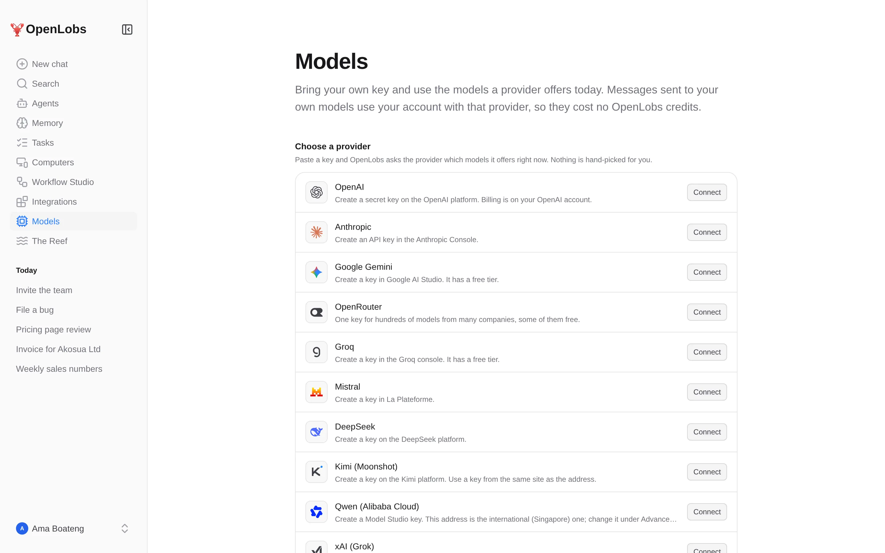
Built to be trusted
The model cannot approve for you. Approval requests are signed by the server, and a forged or moved one is refused.
A read-only task can only use read-only actions.
Your own model keys and tokens are encrypted at rest and never sent back to the browser.
Fetching, MCP and your own addresses go through public-address checks: no private networks, no redirects into them.
Download everything as JSON, or delete the account and the data with it.
It opens no port, runs no commands, and can be paused in one click.
Each rule is enforced in the code and has a test. Read them in the README.
Videos
A 50-second tour, short clips of each part, and three step-by-step tutorials.
The app footage is the real app on sample content, with scripted model replies. In the tutorials, the command and installer steps are illustrated; the commands are the ones in the README.
Screens
Free to start, open source, your keys, your computer
A free plan with daily and monthly credits. Messages on your own model keys cost no credits at all.
Read it, run it, change it. The whole app, server and Bridge are in the repository.
Use the model providers you already have. Keys are sealed and never shown again.
Run it on your own machine, or on Google Cloud Run, from the same code.
You need Node.js 22 or newer, and a Firebase project (or gcloud auth application-default login for local use). Add at least one model key in .env.
One-command Docker setup is planned, not here yet.
git clone https://github.com/richid-stack/Busin.New.git
cd Busin.New
npm install
cp .env.example .env # add at least one model key
gcloud auth application-default login
npm run dev # then open http://localhost:3000Status
OpenLobs is in active development. This is straight from the project README.
Questions
There is a free plan with daily and monthly credits, and a normal message costs one credit. Messages on your own model keys cost no OpenLobs credits. Paid plans are not available yet.
No. You can chat with the built-in models using your free credits. If you would rather use a provider you already pay for, add your own key on the Models page.
Your key is checked by asking the provider which models it offers, then stored encrypted and never shown again. It is never sent back to your browser.
Not for anything that changes things. It shows exactly what it is about to do, on which app, and waits for your approval. The model cannot approve for you.
Only a short fixed list, and only the parts you allow: answer a ping, look at a web page in an empty browser, use a browser in a profile of its own, and work on spreadsheet copies in one folder. It opens no port, runs no commands, and you can pause or disconnect it at once.
The web app works anywhere you have a browser. The Bridge is Windows first and still early; from source it also runs elsewhere.
In your own Firebase project when you run it yourself. You can download everything as JSON, or delete your account and its data, from Settings.
They are the real app running on sample content, with scripted model replies so every take is the same. The installer and command steps in the tutorials are illustrated, and say so.